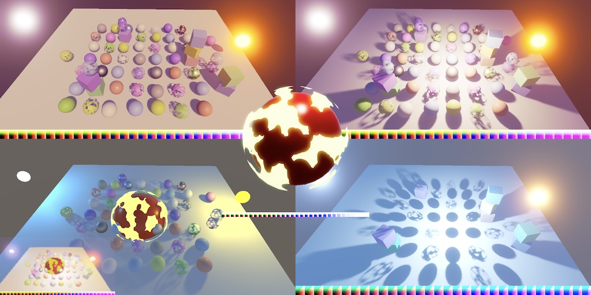
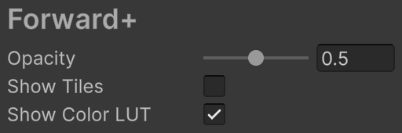
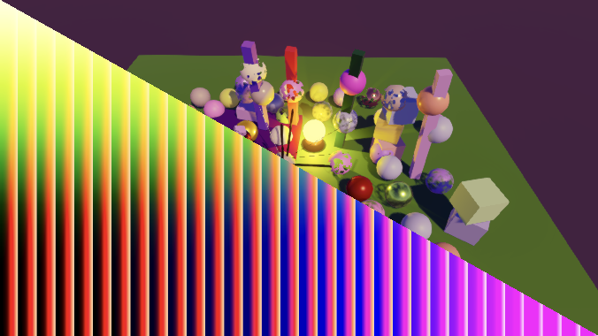
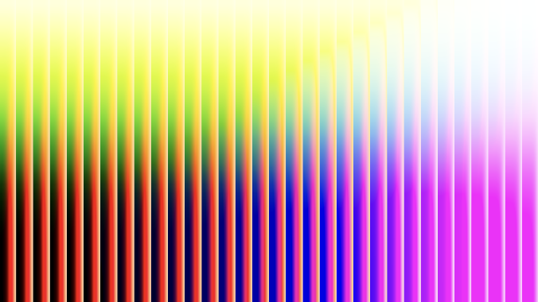
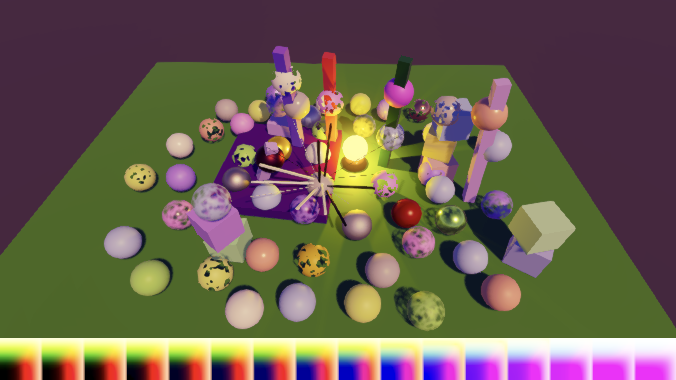
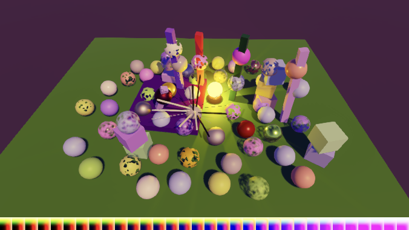
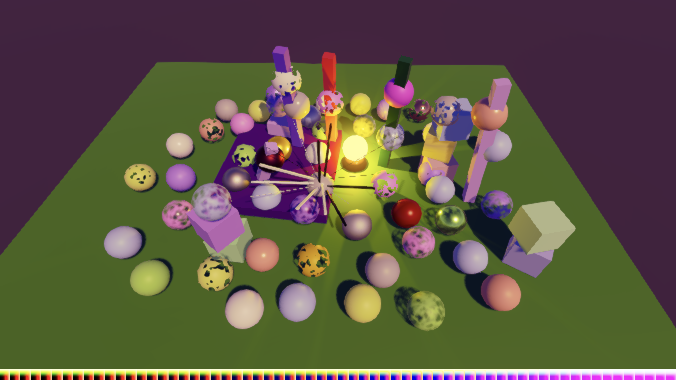

Custom SRP 6.1.0
Showing Color LUT

This tutorial is made with Unity 6000.3.11f1 and follows Custom SRP 6.0.0.
Camera Target Texture
This time we're going to add a debug visualization for the color LUT. But before we get to that we'll fix an issue when the camera renders to a texture. At the moment we're always relying on BuiltinRenderTextureType.CameraTarget, but this fails when the camera is set to render to a texture. This can be seen in the Multiple Cameras scene, which has one camera that renders to a texture. It doesn't render anything to the texture asset, and when that camera is selected it can end up rendering to an arbitrary region of the editor window.
We resolve this issue by using the camera's target texture directly if it is available. Let's set this up in a single place. Add a cameraTarget field for it to CameraRendererTextures.
public readonly TextureHandle
colorAttachment, depthAttachment,
colorCopy, depthCopy,
cameraTarget;
public CameraRendererTextures(
TextureHandle colorAttachment,
TextureHandle depthAttachment,
TextureHandle colorCopy,
TextureHandle depthCopy,
TextureHandle cameraTarget)
{
this.colorAttachment = colorAttachment;
this.depthAttachment = depthAttachment;
this.colorCopy = colorCopy;
this.depthCopy = depthCopy;
this.cameraTarget = cameraTarget;
}
We set the target at the end of SetupPass.Record where we create the CameraRendererTextures struct. Up to this point we always imported the backbuffer using BuiltinRenderTextureType.CameraTarget, so that's what we start with.
TextureHandle target = renderGraph.ImportBackbuffer( BuiltinRenderTextureType.CameraTarget); return new CameraRendererTextures( colorAttachment, depthAttachment, colorCopy, depthCopy, target);
To fix the issue all we have to do is check whether the camera has its targetTexture set. If so use that instead.
RenderTexture targetTexture = camera.targetTexture; TextureHandle target = renderGraph.ImportBackbuffer( targetTexture ? targetTexture : BuiltinRenderTextureType.CameraTarget);
Now we have to make all passes that need the camera target use the new field. Do this in PostFXPass.Record, in FinalPass.Record, and in GizmosPass.Record.
pass.cameraTarget = textures.cameraTarget;
Rendering to a texture now works as it should.
Color LUT Debugging
At the moment there is no easy way to see the color LUT that we generate. We can find it via the frame debugger, but this is inconvenient. So let's add an option to show the color LUT to the Rendering Debugger. Add a field for it to CameraDebugger.
static bool showTiles, showColorLUT;
Now the debugger should be active when either tiles or the color LUT is shown. We'll not apply the opacity to the color LUT, because that would mess up its colors. So whether we show the color LUT is not affected by the debug opacity.
public static bool IsActive => (showTiles && opacity > 0f) || showColorLUT;
Add a toggle option to show the color LUT in Initialize.
public static void Initialize(Shader shader)
{
material = CoreUtils.CreateEngineMaterial(shader);
DebugManager.instance.GetPanel(panelName, true).children.Add(
…
new DebugUI.BoolField
{
displayName = "Show Tiles",
tooltip = "Whether the debug overlay is shown.",
getter = static () => showTiles,
setter = static value => showTiles = value
},
new DebugUI.BoolField
{
displayName = "Show Color LUT",
tooltip = "Whether the color lookup texture is shown.",
getter = static () => showColorLUT,
setter = static value => showColorLUT = value
}
);
}

To show the color LUT we need to access its texture, but it's already globally available so we don't need to directly access it here. We will need to know the resolution of the color LUT in the shader though, to display it correctly. Add a shader property ID for it.
static readonly int
colorLUTResolutionId = Shader.PropertyToID("_ColorLUTResolution"),
opacityID = Shader.PropertyToID("_DebugOpacity");
And add an int parameter for it to Render. From now on we also have to check if drawing the tiles is necessary in Render because we might only need to draw the color LUT.
public static void Render(
UnsafeGraphContext context,
int colorLUTResolution)
{
UnsafeCommandBuffer buffer = context.cmd;
if (showTiles && opacity > 0f)
{
buffer.SetGlobalFloat(opacityID, opacity);
buffer.DrawProcedural(
Matrix4x4.identity, material, 0, MeshTopology.Triangles, 3);
}
}
After that, if needed, we set the color LUT resolution and draw it. We'll just copy the invocation that draws the tiles for now. Because a color LUT isn't always used we have to check if it exists. We'll indicate a missing color LUT by providing a resolution of zero.
if (showTiles && opacity > 0f)
{
buffer.SetGlobalFloat(opacityID, opacity);
buffer.DrawProcedural(
Matrix4x4.identity, material, 0, MeshTopology.Triangles, 3);
}
if (showColorLUT && colorLUTResolution > 0)
{
buffer.SetGlobalFloat(colorLUTResolutionId, colorLUTResolution);
buffer.DrawProcedural(
Matrix4x4.identity, material, 0, MeshTopology.Triangles, 3);
}
Moving on to DebugPass, its Render method now needs extra parameters for the color LUT's resolution and its texture handle. Add a field for the resolution and pass it to CameraDebugger.Render. If the texture is valid then a color LUT exists and we use the given resolution and indicate that we use the texture. Otherwise we set the resolution to zero to indicate that there is no color LUT.
int colorLUTResolution;
[Conditional("DEVELOPMENT_BUILD"), Conditional("UNITY_EDITOR")]
public static void Record(
RenderGraph renderGraph,
CustomRenderPipelineSettings settings,
Camera camera,
int colorLUTResolution,
TextureHandle colorLUT,
in LightResources lightData)
{
if (CameraDebugger.IsActive &&
camera.cameraType <= CameraType.SceneView)
{
using IUnsafeRenderGraphBuilder builder = renderGraph.AddUnsafePass(
sampler.name, out DebugPass pass, sampler);
builder.UseBuffer(lightData.tilesBuffer);
if (colorLUT.IsValid())
{
pass.colorLUTResolution = colorLUTResolution;
builder.UseTexture(colorLUT);
}
else
{
pass.colorLUTResolution = 0;
}
builder.AllowPassCulling(false);
builder.SetRenderFunc<DebugPass>(
static (pass, context) => CameraDebugger.Render(
context, pass.colorLUTResolution));
}
}
To access the texture handle we make PostFXPass.Record return it.
public static TextureHandle Record(…)
{
…
return colorLUT;
}
Pass it along with the resolution in CameraRenderer.Render. If no post FX are active we pass along the default invalid texture handle instead.
TextureHandle colorLUT;
if (hasActivePostFX)
{
postFXStack.BufferSettings = bufferSettings;
postFXStack.BufferSize = bufferSize;
postFXStack.Camera = camera;
postFXStack.FinalBlendMode = cameraSettings.finalBlendMode;
postFXStack.Settings = postFXSettings;
colorLUT = PostFXPass.Record(
renderGraph, postFXStack, (int)settings.colorLUTResolution,
cameraSettings.keepAlpha, textures);
}
else
{
colorLUT = default;
FinalPass.Record(renderGraph, copier, textures);
}
DebugPass.Record(
renderGraph, settings, camera,
(int)settings.colorLUTResolution, colorLUT, lightResources);
Drawing the Color LUT
We'll draw the color LUT in a rectangle at the bottom of the window. We'll need a new debug shader pass for this, so increment the color LUT's pass argument in CameraDebugger.Render. Also, we have to draw a rectangle, which needs two triangles, so its vertex count has to be increased to six.
if (colorLUTResolution > 0 && showColorLUT)
{
buffer.SetGlobalFloat(colorLUTResolutionId, colorLUTResolution);
buffer.DrawProcedural(
Matrix4x4.identity, material, 1, MeshTopology.Triangles, 6);
}
Add the required pass to CameraDebugger.shader. As we're not blending we disable it by using Blend One Zero. Make the pass use dedicated vertex and fragment functions.
Pass
{
Name "Forward+ Tiles"
Blend SrcAlpha OneMinusSrcAlpha
HLSLPROGRAM
#pragma target 4.5
#pragma vertex DefaultPassVertex
#pragma fragment ForwardPlusTilesPassFragment
ENDHLSL
}
Pass
{
Name "Show Color LUT"
Blend One Zero
HLSLPROGRAM
#pragma target 4.5
#pragma vertex ColorLUTPassVertex
#pragma fragment ColorLUTPassFragment
ENDHLSL
}
Add these functions to CameraDebuggerPasses.hlsl. The fragment function simply has to sample the color LUT texture, using a linear clamp sampler. We're not drawing it pixel-perfect, because it would be only 256 pixels wide for resolution 16, but 4096 pixels wide for resolution 64. We'll scale it to fit the entire width of the window instead.
TEXTURE2D(_ColorGradingLUT);
float4 ColorLUTPassFragment(Varyings input) : SV_TARGET
{
return SAMPLE_TEXTURE2D(
_ColorGradingLUT, sampler_linear_clamp, input.screenUV);
}
The vertex function is more complicated. As we're drawing directly in clip space the left and right side of the rectangle are a −1 and 1. The same goes for the bottom and top, except that we might have to invert this based on the projection parameters, like we have to invert the V texture coordinate when drawing the tiles. Let's begin by picking the correct bottom and top coordinates.
Varyings ColorLUTPassVertex(uint vertexID : SV_VertexID)
{
Varyings output;
float bottom, top;
if (_ProjectionParams.x < 0.0)
{
bottom = 1.0;
top = -1.0;
}
else
{
bottom = -1.0;
top = 1.0;
}
return output;
}
Next, let's draw a single triangle that covers the lower left side of the window. Create the vertices via separate if blocks based on the first three vertex IDs. Note that we don't need to flip the V coordinates because we flip the entire triangle.
if (vertexID == 0)
{
output.positionCS_SS = float4(-1.0, bottom, 0.0, 1.0);
output.screenUV = float2(0.0, 0.0);
}
else if (vertexID == 1)
{
output.positionCS_SS = float4(-1.0, top, 0.0, 1.0);
output.screenUV = float2(0.0, 1.0);
}
else if (vertexID == 2)
{
output.positionCS_SS = float4(1.0, bottom, 0.0, 1.0);
output.screenUV = float2(1.0, 0.0);
}
return output;

Complete the rectangle by adding the fourth vertex via a final else block.
else if (vertexID == 2)
{
output.positionCS_SS = float4(1.0, bottom, 0.0, 1.0);
output.screenUV = float2(1.0, 0.0);
}
else
{
output.positionCS_SS = float4(1.0, top, 0.0, 1.0);
output.screenUV = float2(1.0, 1.0);
}
Then fill in the missing vertices using the existing if blocks.
else if (vertexID == 1 || vertexID == 4)
{
output.positionCS_SS = float4(-1.0, top, 0.0, 1.0);
output.screenUV = float2(0.0, 1.0);
}
else if (vertexID == 2 || vertexID == 3)

Now we have to calculate the correct height for the rectangle, based on the resolution of the color LUT. First, we have to make the height equal to the width, by dividing the buffer height by its width. Then double that because the width covers two units in clip space. We find the final correct height by dividing by the color LUT resolution.
float _ColorLUTResolution;
Varyings ColorLUTPassVertex(uint vertexID : SV_VertexID)
{
Varyings output;
float height = 2.0 * _CameraBufferSize.y * _CameraBufferSize.z;
height /= _ColorLUTResolution;
float bottom, top;
…
}
If the projection coordinates go from top to bottom then the top is at one minus the height. Otherwise it's the height minus one.
float bottom, top;
if (_ProjectionParams.x < 0.0)
{
bottom = 1.0;
top = 1.0 - height;
}
else
{
bottom = -1.0;
top = height - 1.0;
}



We can now show the color LUT used per camera, both in the editor and in builds. This makes debugging it easy. We'll take advantage of this when we modernize the color LUT in the next tutorial, which is Custom SRP 6.2.0.
license repository PDF